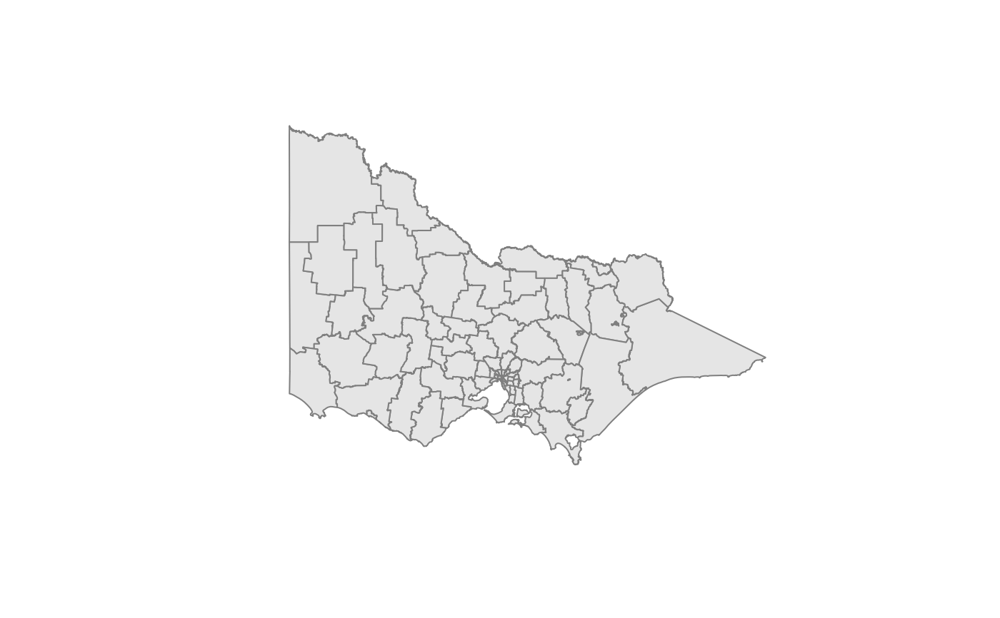

An example polygon layer of Victoria's LGAs for demos and tests.
Built from data-raw/map/LGA_POLYGON.shp, Z/M dropped, transformed to a
projected CRS, simplified, validated, and reduced to LGA_NAME + geometry.
Format
An sf object with:
- LGA_NAME
Character, LGA name (upper case).
- geometry
MULTIPOLYGON/POLYGONin a projected CRS.
Details
The CRS stored in the object is whatever st_crs(vic) reports at build time.
In data-raw/gen-data.R we:
drop Z/M (
st_zm()),transform to a projected CRS (
st_transform()),simplify (
st_simplify(dTolerance = 100)),repair geometries (
st_make_valid()),upper-case names and select columns.
Examples
library(sf)
plot(sf::st_geometry(vic), col = "grey90", border = "grey50")
